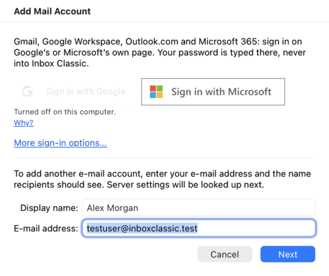

Aggiungere un account di posta
Aggiungi il tuo primo account o un altro account accedendo tramite il browser oppure con indirizzo e password.
Al primo avvio Inbox Classic apre Aggiungi account di posta. Per aggiungere un altro account in seguito, scegli File > Nuovo account.

Gmail, Google Workspace, Outlook.com o Microsoft 365
Per aggiungere l’account tramite il browser:
- Fai clic su Accedi con Google o Accedi con Microsoft. Il browser apre la pagina di accesso del provider.
- Accedi sul sito del provider, poi torna a Inbox Classic. L’account viene aggiunto e inizia la sincronizzazione delle cartelle. Il testo scaricato in anticipo dipende dalle impostazioni.
Un pulsante attenuato è disattivato su questo computer. Fai clic su Perché? sotto il pulsante per sapere perché.
Qualsiasi altro account
Per aggiungere l’account con la sua password:
- Inserisci il nome che vuoi mostrare ai destinatari in Nome visualizzato.
- Inserisci il tuo indirizzo in Indirizzo e-mail.
- Fai clic su Avanti. Inbox Classic cerca le impostazioni del tuo provider. La ricerca può richiedere un po’ di tempo. Annulla salta la ricerca su Windows e Linux. Sul Mac annulla l’aggiunta dell’account.
- Inserisci la password in Password.
- Controlla le impostazioni del server, poi fai clic su Fine. Inbox Classic si connette all’account e scarica le tue cartelle.
Se il provider richiede una password per le app al posto di quella abituale, Inbox Classic ti avvisa e propone di aprire le istruzioni del provider.
Nome account è il nome dell’account nell’elenco delle cartelle, per esempio Lavoro. Inizialmente viene usato il nome del provider o il dominio. Puoi cambiarlo quando vuoi nelle proprietà dell’account.
Per accedere con una tua app di accesso, fai clic su Altre opzioni di accesso nella prima pagina e sceglila.